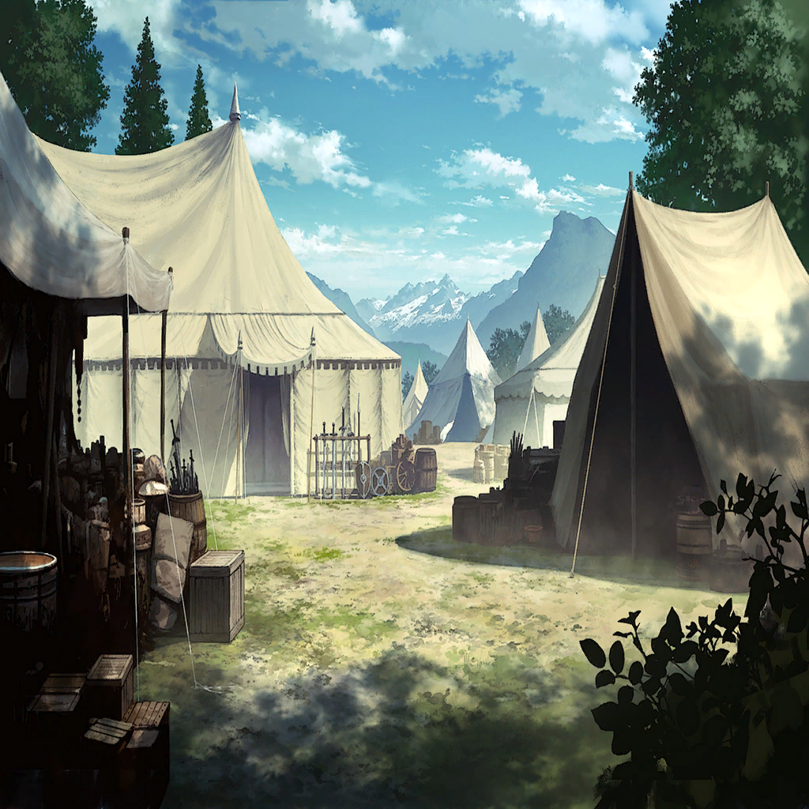

|
|  |

ロギ |
今だ、ディオス…！ |

ディオス |
わかっている…！
聖剣エクスカリバーよ
今再びこの手に、偽りの光を砕く力を…！ |
| 巨大アルカロイド |
Ga、gagapigaga…！
動力部損傷。戦闘モード維持困難
戦闘モード維持困難… |
ロギ |
よし、あとは―― |
| 聖教騎士団第四騎士団員 |
…、ディオス団ちょ――… |
| キーノ |
ありゃりゃ、やられちゃいましたか |
| キーノ |
ま、時間稼ぎとしては上出来ですかね？ |
ディオス |
キーノ…!! |
| キーノ |
ロギ・クロウリーの参戦
まあ予想されたことではありましたが…
まさか聖石を完全に我が物にしているとは |
| キーノ |
…危険ですねえ。実に危険だ |
ロギ |
なら、どうする |
| キーノ |
そうですね――逃げちゃいましょうか |
ロギ |
なっ、消えた!? |
ディオス |
キーノ…！
俺たちから尻尾をまいて逃げるのか…!? |
| キーノ |
いやいや、逃げるでしょう
なにせこちらは、
時間さえ稼げば勝ちなんですから！ |
| キーノ |
大将である俺が生きている限り、
バベル聖騎士団の侵攻は止まらない… |
| キーノ |
果たして、
あとどれだけ耐えられますかねぇ？ |
ディオス |
く…っ！
完全に気配を消したか…！ |
 |
|
ディオス |
…っ、まずい…！
このままでは、王都の防衛部隊が限界に… |
ロギ |
――――… |
ロギ |
全軍を、王城まで下げられるか？ |
ディオス |
それは…可能だが…
そんなことをしてどうする |
ディオス |
あの防衛線を抜かれれば、
こちらにはもう反撃の余地が… |
ロギ |
――王都に侵入した敵軍を一掃する
街に被害が出てしまうのは、
申し訳ないけど… |
ディオス |
できるのか、そんなことが!? |
ロギ |
ああ、けどこの方法は
アルケミィを大量に使うし、
敵味方の識別ができない。だから―― |
ディオス |
…………わかった |
ディオス |
すぐに全軍を退かせる！
ロギ、その後はお前に託す |
ロギ |
ああ。任せてくれ |
ロギ |
…上手くいく、保証はないけれど… |
ロギ |
いや、できるはずだ |
ロギ |
この聖石レヴィアタンとひとつになった、
新たなメサルティムならば…！ |
|
ディオス |
ローレル王！ 教皇猊下！ |
| ローレル |
…おい、なぜここにいる!?
敵の総大将の首はどうした…!! |
ディオス |
悪いが、作戦変更だ！
全軍を急いで王城まで下げてくれ！ |
| ローレル |
無茶を言うな状況を見ろ！
この戦況でなんだって―― |
ディオス |
ロギが、帰ってきた
新たな力とともに |
| ローレル |
…！ |
ディオス |
ロギを信じる
…それが俺たちの共通認識だったはずだ |
| ローレル |
全軍ッ！ 即座に王城まで撤退！
物資は捨てて構わん！
自分と仲間の命を最優先にしろ!! |
| エメリヌア |
…よいのですか？ |
| ローレル |
俺はお飾りの王だぞ!?
信じろと言われたら
信じるしかないだろうが…！ |
| ローレル |
その代わり――
どうにもならなかったら全滅だ |
| ローレル |
あの世でたっぷり
文句言ってやるからな…ッ!! |
ディオス |
だ、そうだ
…頼むぞ、ロギ |
| バベル聖騎士 |
…なんだ？ 敵が退いていく？
ついに諦めたのか？ |
| バベル聖騎士 |
だが好機だ！
連中の無様な背中に、
ありったけの錬金術をお見舞い―― |
| バベル聖騎士 |
…なんだ、騎士がひとり――
いや待て、あの顔は…！ |
ロギ |
――創造開始。幻影展開―― |
ロギ |
“我は万象を塞ぐ城砦にして、
万里を呑み込む海嘯のうねり――” |
レヴィアタン |
――聖石レヴィアタンへの
アクセスを確認 |
レヴィアタン |
我は石となり、その意志に従う―― |
| バベル聖騎士 |
や、奴をすぐに取り押さえろ！
ロギ・クロウリーだ！ |
| バベル聖騎士 |
大罪の錬金術師、
ロギ・クロウリーが出たぞ!! |
| バベル聖騎士 |
な――こんな陸地で、津波だと…!?
全軍、撤た―― |
|
|